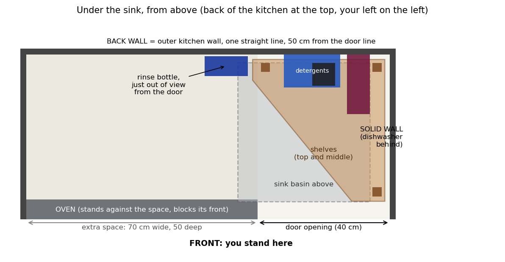
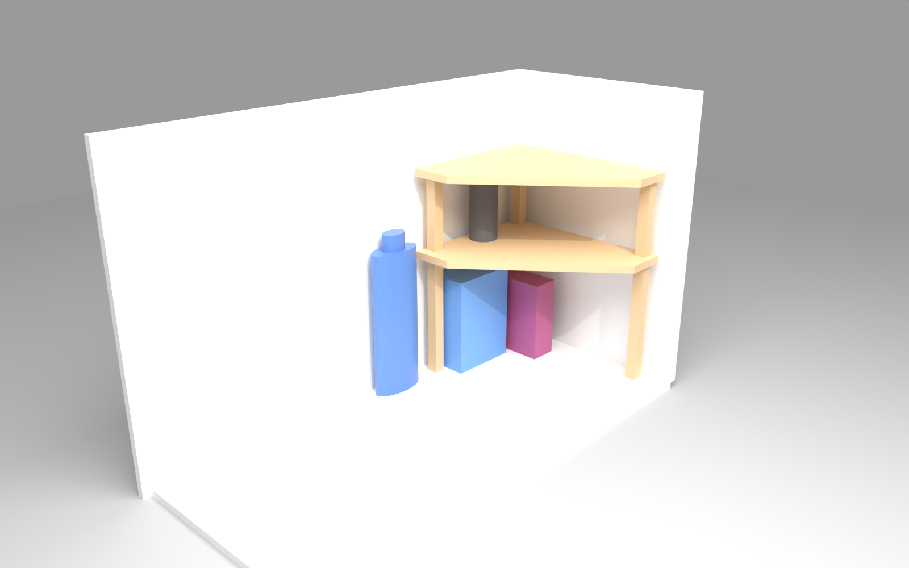
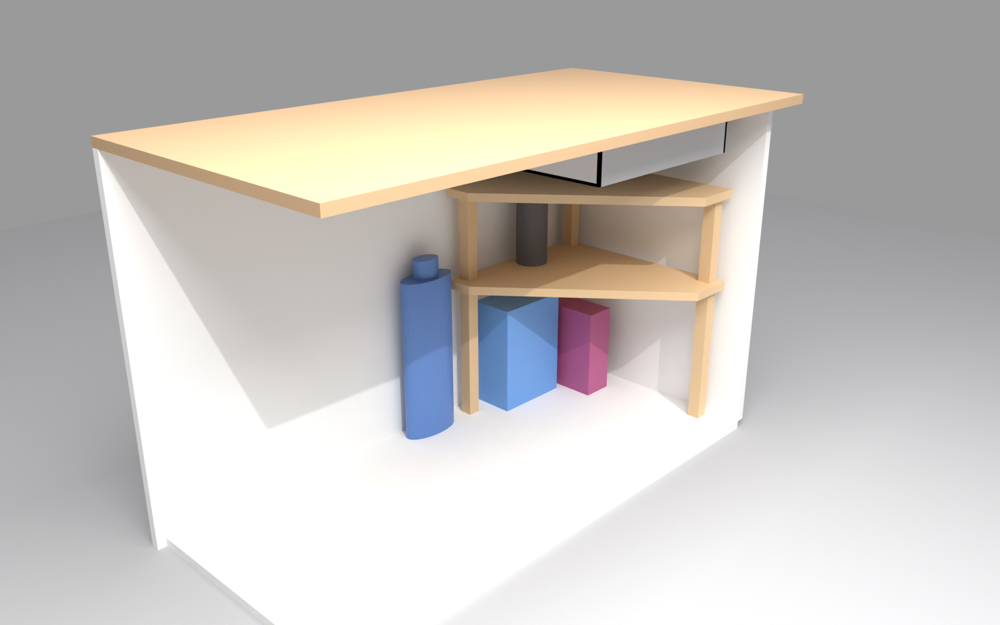
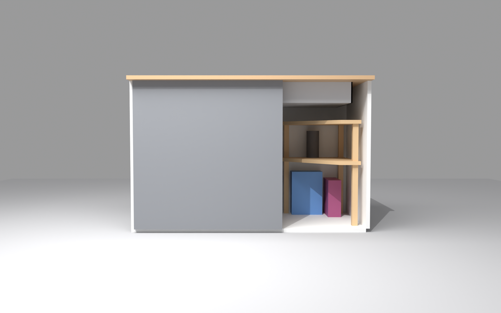
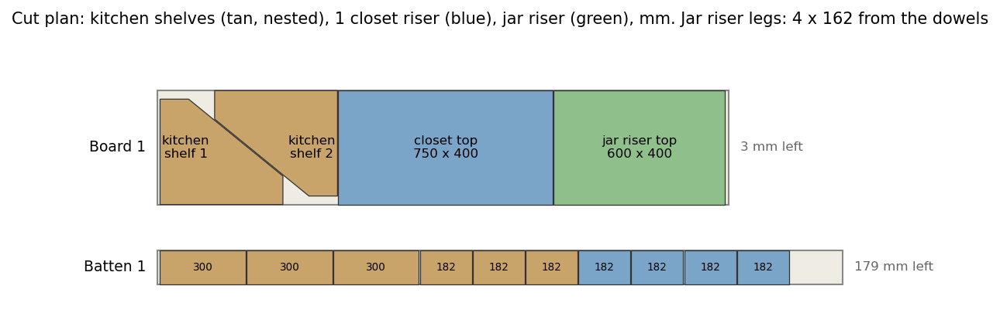

Misc / under-sink shelf
A two-tier shelf for the 40 × 50 cm cabinet in Palaiseau, with the measurements you gave: 40 cm opening, 50 cm deep, 60 cm from the cabinet floor to the basin bottom. v3 raises the middle shelf so you can store under it, flattens the back, and sharpens the slope at the front-left. All dimensions are in millimetres.
Drag to orbit, scroll to zoom. The walls, counter and basin are shown for scale. The pipes are estimates from a photo.




Layout, standing at the door and looking in. Right: a solid wall, with the dishwasher behind it. The shelves go against it. The cabinet is 40 cm wide at the door and 50 cm deep, and its back is the outer kitchen wall. Left: the oven stands beside the door. Behind it is an extra space, 70 cm wide and the same 50 cm deep, level with the cabinet and open to it, on the same straight back wall. From the dishwasher wall to the far left wall is 110 cm. Only the right 40 cm are reachable through the door. The corner counter covers all of it. The sink basin is shifted left: it starts 6 cm from the dishwasher wall and reaches 6 cm over the extra space. The four items are at their measured sizes. The two detergent boxes stand upright at the back of the cabinet floor, the bags stand upright on the middle shelf, and the rinse bottle stands at the back, just left of the door opening, so it is out of view from the open door. The oven front is drawn as a grey panel in the front view and left out of the angled ones. Positions are a layout, not a measurement. The trap and hose are not in the model.
| Item | v2 | v5 (current) | Why |
|---|---|---|---|
| Shape | Right isosceles triangle, 380 mm legs | Five sides: 370 mm back edge, 430 deep, 100 mm front edge. The left edge runs straight for 100 mm at the back, then one diagonal (about 39° off straight) runs all the way to the front edge. Area 1146 cm², up from 722 cm². | The back keeps its full width for longer, and only 10 cm of the 40 cm width is left at the front, so it is easy to reach past the front of the shelf into the extra space on the left. |
| Middle shelf height | 120 mm underside | 300 mm underside, 300 mm clear space below | Room under it for the detergents standing upright (240 mm and 200 mm tall). |
| Top shelf | Top at 500 mm | Underside at 500 mm, top at 518 mm, 82 mm below the basin bottom. Same outline as the middle shelf. | 50 cm off the floor, as asked. The bags stand on the middle shelf (150 mm tall) with 32 mm to spare under the top shelf. |
| Supports | Three posts at the triangle corners | Three posts: back-left, back-right and front-right. The front-left corner is cut away, leaving a 100 mm front edge. | Keeps the open front-left clear. The shelf is light (about 1 kg), so the cantilever is fine. |
| Margins | Not stated | 15 mm to the back and side walls, 55 mm to the front; the basin margin is 80 mm (was 100 mm) to fit the 50 cm height; the basin is shifted left, 6 cm clear of the dishwasher wall and 6 cm over the extra space; stored items checked against posts and shelves | Safety margin for a cabinet whose dimensions are only approximate. The 80 mm basin margin is a choice to confirm against the basin fittings. |
The design checks run in build_model.py; the build stops if a margin is violated.
| Part | Qty | Size (mm) | Notes |
|---|---|---|---|
| Pine board | 1 | 40 × 200 × 1.8 cm | Castorama PPA18400. Cut the two shelves nested (below): together they take 621 mm of the board, leaving room for the closet riser top (750 mm) and the jar riser top (600 mm). |
| Middle shelf | 1 | 370 back, 430 deep, 100 front × 18 | Cut from a 370 × 430 mm rectangle. Mark 100 mm in from the back along the left edge, and the point 100 mm from the right side along the front edge, and join the two with one straight saw cut. Keep the other corners square. |
| Top shelf | 1 | Same outline as the middle shelf | Turned 180° on the board so its diagonal runs beside the middle shelf's (see the cut plan). |
| Base posts | 3 | 27 × 27 × 300 | Under the middle shelf. |
| Middle posts | 3 | 27 × 27 × 182 | Between the shelves. |
| Corner brackets | 9 | 40 × 40 mm | One per joint, as in v2. |
Batten total: 1446 mm plus about 12 mm of kerf. One 2.4 m batten is enough, with room for the four closet riser legs.
Nested cut: lay the middle shelf at one end of the board, its 370 mm back edge across the board against one long edge, and its 100 mm front edge 430 mm along. Turn the top shelf 180° and put it against the other long edge, with its narrow front edge 191 mm from the end of the board, so the two diagonals run side by side about 4 mm apart. Both shelves end 621 mm from the end of the board. Saw the two diagonals as two separate cuts, one on each line.

The closet riser (750 × 400 top, four 182 mm batten legs) and the jar riser (600 × 400 top, four 162 mm legs from 20 mm dowels, 18 cm tall) are on the Cost & buy list tab. Generated by closet_riser.py.
| Boiled linseed oil (Phébus) | Water-based polyurethane varnish | |
|---|---|---|
| Water sealing | Repels water at the surface but doesn't form a film. Water can still get into the end grain, and the oil cures slowly, so for weeks it stays soft. Sources describe it as "less durable than most evaporative finishes". | Forms a continuous film, which is a better water barrier once cured. Recoat times are short (1–5 hours, per datasheets). Cure takes longer than the dry-to-touch time. Thin films scratch more easily, so keep the surface clean and dry. |
| Cost | €8.79 for 1 L at Castorama (product page). Probably more than enough for this shelf (about 0.6 m² of surface), so cost per job is low. Check the coverage on the label. | I did not find a Castorama water-based varnish price. Water-based varnishes usually cost more per litre; check the price on the product page before buying. |
| Eco | Natural base oil, but commercial boiled linseed often contains metal driers and solvents. The Phébus sheet suggests thinning with 30–50% turpentine, which is a solvent. Oily rags can self-heat and catch fire. | Low VOC: datasheets list 10 g/L (Codeve), 100 g/L maximum (Comus) and 130 g/L maximum (Peintagone). Water clean-up. Not a natural product, and it contains plastic resins. |
Chosen: boiled linseed oil. Cure for at least two weeks in the cellar. The verdict below is kept for reference.
Verdict for under the sink: water-based polyurethane gives the better water barrier, and it is lower VOC than solvent varnish. Linseed is the more natural choice, but it needs a longer cure, and the oiled end grain is the weak point. If the water barrier matters more than the look, go with water-based. If you want the natural finish, use linseed, cure it for at least two weeks, and keep the shelves away from drips.
Sources used: Codeve, Peintagone VERNIX PU AQUA, Comus, and the Castorama and Phébus product pages. The water-resistance claims are from manufacturers and were not independently tested. The 1 L linseed price is from the Castorama product page.
| Item | Result | Price | Status |
|---|---|---|---|
| Pine board | Tablette en pin massif 40 × 200 cm, 18 mm (PPA18400) | €16.90 | buy |
| 27 × 27 batten | The 27 × 27 lamelles are discontinued. Replacement: Baguette d'angle rabotée pin 27 × 27 mm, 2.4 m (same profile, pine, not water-resistant). | €8.69 | buy |
| Screws | Vis à bois inox A2 Pozidriv 4 × 40 mm, 200 pièces | €19.90 | buy |
| Boiled linseed oil 1 L | Castorama "Huile de lin pour protéger Phébus 1 L" product page. | €8.79 | buy |
| Coping saw, brackets, glue, clamps, sandpaper, brush | Checked on 16 Oct 2026. Prices and the Amazon comparison are on the Cost & buy list tab. | — | see tab |
Prices on all four product pages were re-checked in the browser on 16 Oct 2026 and match the table. Note that the batten page lists "Bord incliné" (a bevelled edge profile), so the posts will have slightly eased edges. Stock at the Palaiseau store was not verified: the product pages ask for a postal code. Check the store, or castorama.fr with Palaiseau selected. Prices are from the product pages; the baguette's search snippet showed €7.89, the page €8.69.
Size comes from the parts: the shelves are 18 mm and the posts are 27 mm. A 4 × 40 mm screw goes through the shelf and 22 mm into the post, enough to hold without splitting the post. The 4 mm shank needs a 2.5 mm pilot hole, as in the build notes.
Buy stainless (A2), because the cabinet is damp. The Castorama pack of 200 for €19.90 is about €0.10 per screw. The shelves need roughly 12 of these. The 9 brackets need about 18 short screws (3.5 × 16 mm, because the shelf is only 18 mm thick), not these 40 mm ones; they are on the Cost & buy list. The photo's screws are not used: their size was uncertain, and the screws to buy are now specified.
Before cutting: check the back of your cabinet for the trap and the dishwasher hose. The design does not allow for them, so if either sits where the top shelf or a post would go, tell me before cutting.
Cutting: mark the outline on the board with a square, clamp a batten on each line, and support the board so the tail doesn't tear out.
Drilling: pre-drill 2.5 mm through the shelf and into the post, countersink, and keep screws at least 15 mm from any edge.
Finish: sand to 120 then 180 grit, and vacuum. Seal the end grain first. For water-based varnish, follow the datasheet recoat times and sand lightly between coats. For linseed oil, thin coats with at least two weeks to cure.
Oily rags: lay them flat outdoors to dry, or soak them in water and put them in a sealed metal bin.